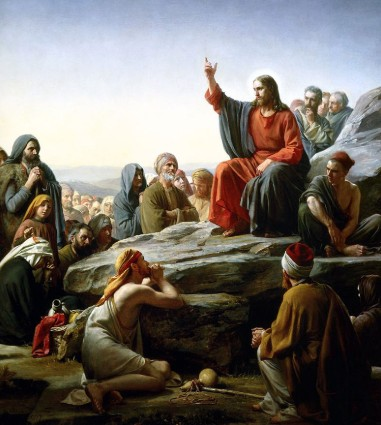
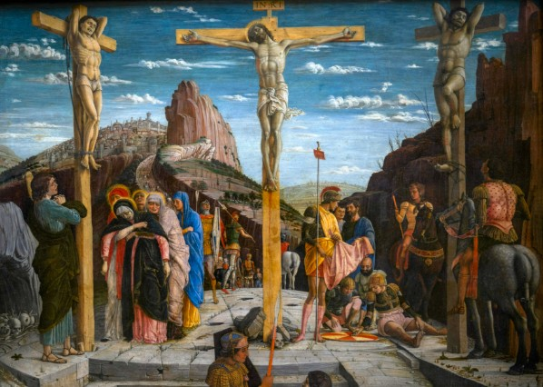
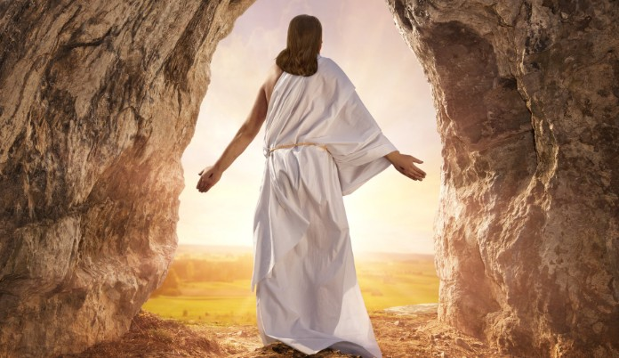
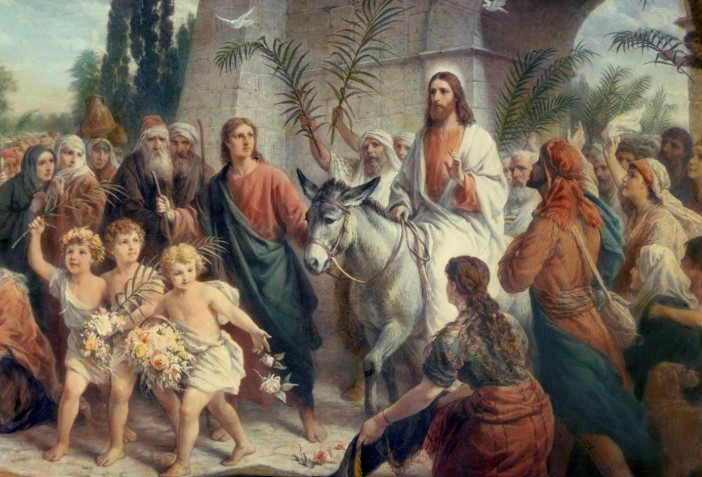

“For unto us a child is born, unto us a son is given” (Isaiah 9:6). Jesus was born in Bethlehem, fulfilling ancient prophecies about the coming of the Messiah. Born in a manger, He was visited by shepherds and wise men from the East who recognized His divine identity. “And you Bethlehem... out of you shall come a Governor, that shall rule my people Israel.” (Matthew 2:6)
His early life was not one of luxury but of simplicity, obedience, and divine favor. When King Herod sought to kill Him, His family fled to Egypt until it was safe to return. This, too, fulfilled prophecy: “Out of Egypt I called my son.” (Hosea 11:1)
At twelve years old, Jesus astonished teachers in the Temple with His understanding. When His parents found Him, He said, “Did you not know that I must be about my Father’s business?” (Luke 2:49). From a young age, He was aware of His divine mission.
Jesus’ childhood teaches us humility and patience. Though the Son of God, He waited quietly, honoring His parents, learning, and preparing for His future work.
The Gospel of Luke records: “And the child grew and became strong; he was filled with wisdom, and the grace of God was on him.” (Luke 2:40). This grace and wisdom are the foundation of His later ministry.
He lived not in palaces but in Nazareth, a small town. Yet God was with Him. “Can anything good come out of Nazareth?” (John 1:46) — and the answer is yes, the Savior of the world.
We see how God chooses the humble and the unexpected. Even as a child, Jesus was the light of the world.
His presence brought peace and direction to His parents, who faithfully obeyed God's guidance through angels and dreams.
Jesus’ childhood reminds us that every stage of life is sacred when lived in the will of God.
From the beginning, His life was a fulfillment of promise and a testament to God’s faithfulness.
After returning from Egypt, Joseph and Mary settled in Nazareth, where Jesus grew up simply. “And Jesus increased in wisdom and stature, and in favor with God and man.” (Luke 2:52). The young Jesus led an ordinary life, learning the carpenter’s trade from His father.
Despite the lack of spectacular events during this period, His life was deeply connected with the Heavenly Father. He prayed, studied Scriptures, and treasured the words of the Law in His heart.
Through honest work, He understood the needs of ordinary people. “The Son of Man did not come to be served, but to serve.” (Matthew 20:28)
Though He was God incarnate, Jesus patiently waited for the appointed time from the Father to begin His work. His humility is exemplary.
The people of Nazareth did not consider Him special. “Is not this the carpenter’s son?” (Matthew 13:55). This shows us that God’s glory often hides in simple things.
Jesus’ quiet life during this stage teaches us patience, obedience, and dedication to small things — because these prepare for great missions.
Every day of His life was a lesson in humility and faithfulness, and His love for God was shown through small acts.
Jesus began His public work at about 30 years old after being baptized by John the Baptist in the Jordan River. “This is My beloved Son, in whom I am well pleased.” (Matthew 3:17). This was the moment of divine validation before the people.
Immediately after baptism, He was led by the Spirit into the wilderness to be tempted by the devil for 40 days. He emerged victorious, showing that He was without sin.
Jesus preached repentance: “Repent, for the kingdom of heaven is at hand.” (Matthew 4:17). He gathered disciples, healed the sick, comforted the suffering, and brought hope to the lost.
His miracle power was not just supernatural but deeply rooted in compassion for the human soul.
Jesus taught with authority, unlike the scribes. “Never has anyone spoken like this man!” (John 7:46)
He challenged religious hypocrisy and brought a living teaching based on love, truth, and mercy.
His work spread throughout Galilee, Judea, and beyond the Jordan. Crowds followed Him for healing, but He desired the transformation of their hearts.
Jesus brought radical teaching based on God's unconditional love and the call to holiness. “Blessed are the pure in heart, for they shall see God.” (Matthew 5:8)
The Sermon on the Mount is the pinnacle of His moral teaching. He speaks about blessings, prayer, forgiveness, and the attitude of the heart.
Jesus redefined the Law, emphasizing its spirit rather than the letter: “You have heard that it was said... but I say to you...” (Matthew 5)
He taught about the Kingdom of God, a kingdom of justice, peace, and truth. “Seek first the kingdom of God and His righteousness.” (Matthew 6:33)
Through parables, He explained spiritual truths. The parables of the prodigal son, the sower, and the good Samaritan remain essential for understanding divine love.
Jesus called for forgiveness, service, and love even for enemies. “Love your enemies and pray for those who persecute you.” (Matthew 5:44)
Through His teachings, Jesus shows us the path to a meaningful life lived in truth and light.
Jesus performed countless miracles to prove that He is the Son of God. “Go and tell John what you have seen and heard: the blind see, the lame walk...” (Matthew 11:5)
His first miracle was at the wedding in Cana, where He turned water into wine, showing that He sanctifies joy and family.
He healed the sick, cast out demons, calmed storms, and even raised the dead, as in the case of Lazarus. “I am the resurrection and the life.” (John 11:25)
Every miracle carried a spiritual message — Jesus desired the transformation of souls, not just bodies.
He fed thousands with few loaves and fish, showing that He is the Bread of Life.
His miracles are signs of compassion and proofs of divine authority.
They call us to believe: “Blessed are those who have not seen and yet have believed.” (John 20:29)
The path to the cross was marked by betrayal, injustice, and suffering. Jesus was arrested after the Last Supper, tried before the Sanhedrin, Pilate, and Herod, and condemned to death despite His innocence.
“Father, forgive them; for they know not what they do.” (Luke 23:34). Even in suffering, He showed love and mercy.
The crucifixion was brutal: Jesus was mocked, scourged, and nailed to a cross, where He died to redeem humanity from sin.
His death fulfills prophecy and opens the way to salvation. “He was pierced for our transgressions.” (Isaiah 53:5)
Darkness covered the land as He died, showing the cosmic significance of the event.
Through His sacrifice, Jesus conquered death and sin once for all.
On the third day, Jesus rose from the dead, conquering death and offering eternal life to all who believe.
“He is not here; for He is risen, as He said.” (Matthew 28:6)
He appeared to Mary Magdalene, the disciples, and many others, proving that He truly lives.
The resurrection confirms Jesus' divinity and promises hope to humanity.
It is the cornerstone of Christian faith and joy.
After Jesus Christ rose from the dead on the third day, many remarkable events occurred that confirmed His victory over death and strengthened the faith of His disciples.
First, Jesus appeared to Mary Magdalene near the empty tomb, greeting her personally and instructing her to tell the disciples that He had risen. “Do not hold on to me, for I have not yet ascended to the Father.” (John 20:17)
Jesus then appeared to two disciples on the road to Emmaus, explaining the Scriptures and revealing how all prophecies were fulfilled in Him. Their hearts burned with understanding and joy. “Were not our hearts burning within us while he talked with us on the road and opened the Scriptures to us?” (Luke 24:32)
Later, Jesus appeared to the eleven disciples in a locked room, showing them His wounds and proving that He was truly alive, not a ghost. He gave them the Great Commission: “Go therefore and make disciples of all nations, baptizing them in the name of the Father and of the Son and of the Holy Spirit.” (Matthew 28:19)
Over the course of forty days, Jesus appeared multiple times to His followers, teaching them about the Kingdom of God, preparing them for the coming of the Holy Spirit, and strengthening their courage and faith. “He presented himself alive to them after his suffering by many proofs.” (Acts 1:3)
One of the most memorable appearances was to Thomas, who doubted Jesus' resurrection until he touched the wounds. Jesus gently rebuked him: “Because you have seen me, you have believed; blessed are those who have not seen and yet have believed.” (John 20:29)
Jesus also appeared to more than five hundred believers at once, reinforcing the reality of His resurrection and commissioning the early Church. “He appeared to more than five hundred brothers and sisters at the same time.” (1 Corinthians 15:6)
The resurrection proved that Jesus defeated sin and death, opening the way for eternal life to all who believe in Him. “I am the resurrection and the life. The one who believes in me will live, even though they die.” (John 11:25)
Finally, Jesus ascended into heaven from the Mount of Olives, promising to send the Holy Spirit to empower His disciples for their mission. “But you will receive power when the Holy Spirit comes on you; and you will be my witnesses in Jerusalem, and in all Judea and Samaria, and to the ends of the earth.” (Acts 1:8)
These events after the resurrection are the foundation of Christian faith and hope, inspiring millions throughout history.
The life of Jesus Christ is the greatest story ever told, full of love, sacrifice, and hope.
His teachings, miracles, death, and resurrection offer a way to eternal life and a personal relationship with God.
Through faith in Him, we find forgiveness, peace, and purpose.
His example calls us to love God and others, to serve humbly, and to live with hope.
“I am the way, the truth, and the life.” (John 14:6)